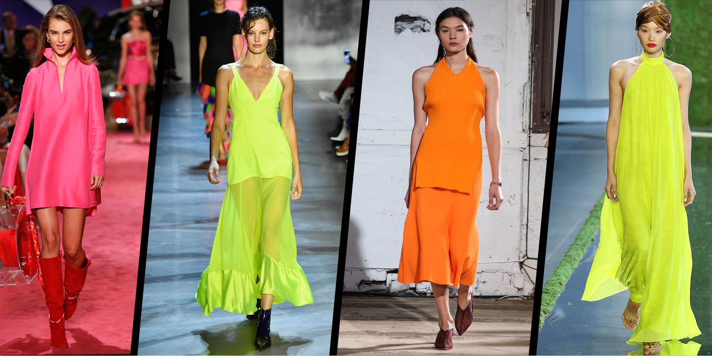

In the modern times where everything keeps updating,few changes in the traditional are updated according to the times and comfort to work culture such updation has lead to new concepts of clothing coming under the broad categorization considered as modern
colors and vibrancy are the two aspects that were given importance in the day 2 of fashion week. it also started with designer showcasing all the vibrant colors used invovling neon shades The Neon shades like bright orange,yellow and purple were the highlights.All the other colors and models were built around these colors. Minimal Accessories were taken into consideration and the major focus has to be on colors and the vibrant effect they giving. since the traditional attires are being confined to only specific times and Occassions these days,western started being more popular
Western Attires
"Attires with vibrant colors adds pomp of brightness to the clothing such clothing can be experimental and if well chosen with perfect confidence,it creates a good clothing couture "
| Brand name and endorsed by | Louis Vuitton. |
|---|---|
| Prada | |
| Michael | |
| gap | helen |
| hollister | Mike |
| Aeropostale | Lara |